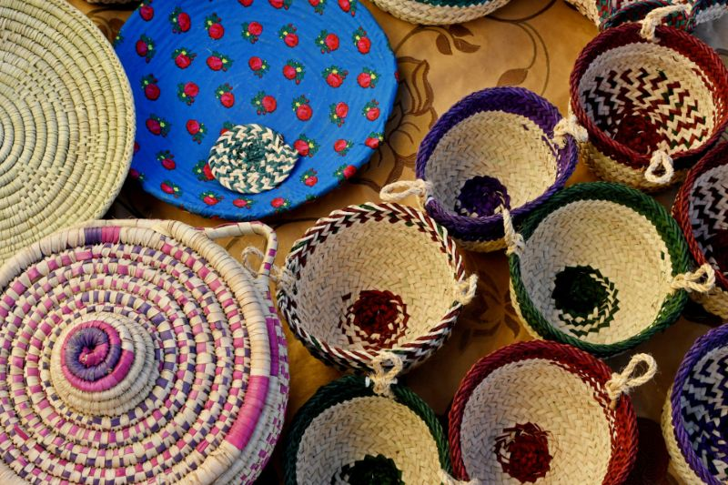

Destinations
Gallery
Get Visa
Al-Sadu

Click here
to watch a video on how Al-Sadu is made
Riyadh Metro
Click here
to watch a video about the Riyadh Metro
Najdi Ardah
Click here
to watch a video on how the Najdi Ardah is performed